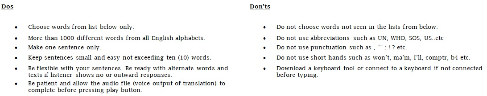
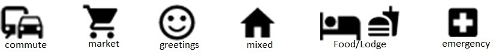

Translator-Developed at Assam down town University(Funded by Assam Association of North America)
Points to remember:

Type one simple english text here or use microphone:
🎤
You might try some quick texts from the catogries below:
